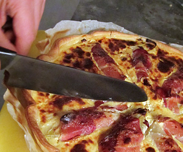

Chicorée Wähe
4 von 64 Chicoréestangen längs halbieren, Strunk herausschneiden. 1.5 Dl Apfelwein mit etwas Salz aufkochen. Chicorée darin 23 Minuten garen. Herausheben und abtropfen lassen. Garflüssigkeit mit drei Eiern und 2.5 Dl Rahm verquirlen. 50g Sprinz beigeben. Mit Salz und Cayennepfeffer abschmecken. Backofen auf 180 °C vorheizen. Kuchenteig auf wenig Mehl ca. 3 mm dünn auswallen. Kuchenblech damit auslegen, Ränder gut andrücken. Chicoréehälften in Schinkentranchen einwickeln. Sternförmig auf den Teig legen. Ei-Käse-Guss darübergiessen. Kuchen in der unteren Ofenhälfte ca. 40 Minuten backen.
